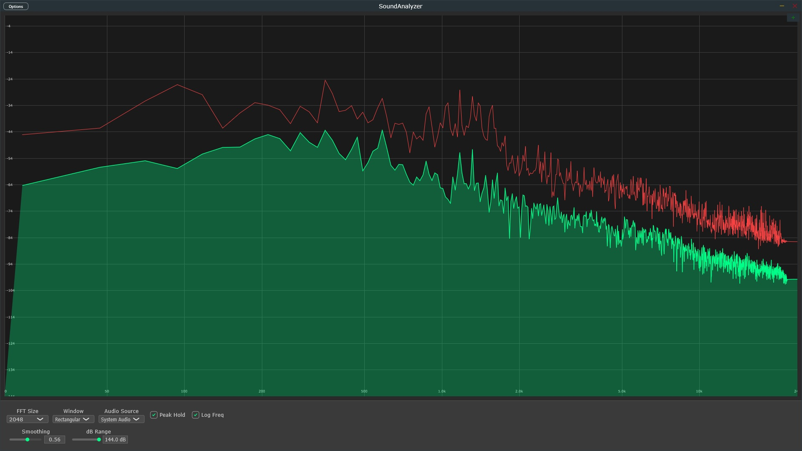

SoundAnalyzer Real Time Spectrum Analyzer
Professional real time spectrum analyzer with built-in WASAPI loopback system audio capture. Advanced FFT analysis with configurable parameters for audio engineers, content creators, musicians and everyone. Available as a STANDALONE application and VST3 plugin for real-time frequency analysis.

Real Time Spectrum Analysis Features
Built-in System Audio Capture
No additional setup required - capture system audio directly without configuration.
Real Time FFT Analysis
Professional real time spectrum analyzer with selectable FFT sizes (1024-16384 points), multiple windowing functions, and logarithmic frequency scaling.
Real Time Spectrum Visualization
Live frequency spectrum display with peak hold functionality, smoothing controls, and adjustable dB range for comfortable audio analysis.
Multi-Format Plugin
Available as VST3 plugin and Standalone application for Windows. Compatible with FL Studio, Ableton, Cubase, Pro Tools, Reaper, and all major DAWs.
Low CPU Usage
Optimized real-time processing with efficient algorithms. Designed for continuous monitoring in production environments.
Professional UI
Dark theme interface optimized for studio environments. Clear spectrum visualization with professional-grade metering and controls.
Technical Specifications
Audio Processing
- FFT Sizes: 1024, 2048, 4096, 8192, 16384 points
- Sample Rates: 44.1kHz, 48kHz, 88.2kHz, 96kHz, 192kHz
- Bit Depth: 16, 24, 32-bit float
- Windowing: Hann, Hamming, Blackman, Rectangular
- Frequency Response: 20Hz - 20kHz
System Requirements
- Windows 10/11 (64-bit)
- Intel i5 or AMD equivalent
- 4GB RAM minimum, 8GB recommended
- WASAPI-compatible audio interface
- VST3 compatible DAW (for plugin use)
Plugin Formats
- VST3 (64-bit)
- Standalone Application
- Windows 10/11 Compatible
- JUCE Framework Based
- 32-bit available on request
Get SoundAnalyzer
Limited time offer - Regular price $59
- Built-in WASAPI system audio capture
- Real-time FFT spectrum analysis
- VST3 plugin and Standalone application
- Windows 10/11 (64-bit)
- Professional peak hold and smoothing
- Configurable FFT sizes and windowing
- Low CPU usage, optimized performance
- 1 year of free updates
- Email support included
30-day money-back guarantee
Download SoundAnalyzer
Ready to start analyzing?
Get instant access to SoundAnalyzer with secure payment processing through Gumroad. Download links delivered immediately after purchase.
Supports Windows 10/11 (64-bit) Need the 32-bit version?
Frequently Asked Questions
What is a real-time spectrum analyzer?
A real-time spectrum analyzer is a professional audio tool that displays the frequency content of an audio signal as it's playing. It uses FFT (Fast Fourier Transform) to break down complex audio into individual frequency components, showing you exactly what frequencies are present at any given moment. This is essential for mixing, mastering, and audio analysis.
How does FFT spectrum analysis work?
FFT (Fast Fourier Transform) is an algorithm that converts time-domain audio signals into frequency-domain data. SoundAnalyzer samples your audio, applies FFT processing with selectable sizes from 1024 to 16384 points, and displays the resulting frequency spectrum in real-time. Higher FFT sizes provide better frequency resolution but slightly slower response.
Can I use SoundAnalyzer as a VST3 plugin?
Yes! SoundAnalyzer works both as a VST3 plugin and as a standalone application. The VST3 version integrates seamlessly with all major DAWs including FL Studio, Ableton Live, Cubase, Pro Tools, Logic Pro, and Reaper. Simply load it on any channel to analyze that track's frequency content.
Does it capture system audio automatically?
Absolutely! SoundAnalyzer includes built-in WASAPI loopback audio capture, which means it can analyze any audio playing on your Windows computer without any additional configuration or virtual audio cables. Just launch the standalone version and it immediately starts capturing and analyzing your system audio.
What makes SoundAnalyzer different from free alternatives?
While free spectrum analyzers exist, SoundAnalyzer combines professional-grade FFT analysis, built-in WASAPI system audio capture, modern UI, multiple windowing functions, configurable FFT sizes, peak hold, and low CPU usage—all in one package for just $5. Most free alternatives lack system audio capture or have outdated interfaces.
Is there a free trial available?
We offer a 30-day money-back guarantee with every purchase. If SoundAnalyzer doesn't meet your expectations, simply email us at xyaudiomail@gmail.com for a full refund. At only $5, it's an affordable way to get professional spectrum analysis capabilities.
What are the system requirements?
SoundAnalyzer requires Windows 10 or 11 (64-bit), an Intel i5 or AMD equivalent processor, and at least 4GB RAM (8GB recommended). It works with any WASAPI-compatible audio interface and supports sample rates from 44.1kHz to 192kHz. Still the app may run on much lower specs with high performance it is a lightweight application. These are just general recommendations.
Is there a 32-bit version available?
A 32-bit version is available upon request - please contact us at xyaudiomail@gmail.com with your purchase receipt.
Which windowing functions are included?
SoundAnalyzer includes all professional windowing functions: Hann, Hamming, Blackman, and Rectangular. Each window type is optimized for different analysis scenarios. Hann is great for general use, Blackman for high dynamic range, and Rectangular for transient analysis.
Professional Audio Guides
Learn professional audio engineering techniques with our comprehensive guides. Written for producers, engineers, and audio enthusiasts.
How to Read a Spectrum Analyzer
Complete professional guide covering frequency ranges, FFT resolution, identifying resonances, fixing frequency masking, and achieving balanced mixes. Research-backed content from industry experts.
Read Guide →WASAPI Loopback Guide
Learn how to capture and analyze system audio with WASAPI loopback. Includes use cases for music production, streaming analysis, DAW monitoring, and professional audio testing.
Read Guide →